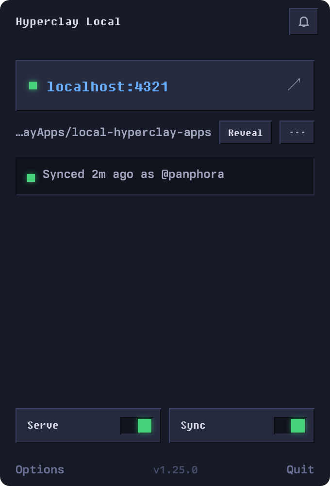

Local-first HTML apps
An HTML file that saves itself
Hyperclay Local is a free, open-source desktop app that runs a tiny server on your machine.
No database. No build step. No backend.

Getting started
Point it at a folder
- Pick a folder on your machine.
- Click start in the tray, and the app serves that folder on localhost.
- Open a page in your browser and edit the file using its own UI.
- Hit save, and the page writes its new HTML back to the real file on disk.
Result: You have a real desktop application in a single HTML file.
The idea
A file that remembers
An HTML file can do almost anything. It can lay out an interface, run JavaScript, call browser APIs, and respond to every click and keystroke.
The one thing it cannot do is remember. Close the tab and every change is gone.
A malleable HTML file fixes that. It serializes its own DOM and posts it to a local server, which writes it back to the file on disk. Open it again and your changes are still there.
That makes one file a complete application. Its layout, its logic, and its data all live in the same document. You can email it, commit it to git, or drop it in Dropbox, and it still works.
How it works
What the app actually does
Browsers can open an HTML file, but the sandbox stops them from writing back to disk. Hyperclay Local closes that gap. It runs a small local Express server with a single endpoint:
POST /_/save
When a page saves, it posts its own HTML to that endpoint with a Page-URL header naming the page, and the server maps it to the right file inside the folder you chose. It writes the file and keeps the previous version as a backup. That is the whole system. You can read the server in an afternoon.
Live demos
See what you can build
These are not screenshots. Every app below is a single HTML file running live in this page. Type in the wiki, check off a to-do, change a number in the budget and watch the total update. Run the same file under Hyperclay Local and every change saves itself to disk.
- Home
- Ideas
- Reading
What I did today
| Item | Cost |
|---|---|
| Rent | |
| Groceries | |
| Coffee | |
| Internet | |
| Total |
- Pancakes
- Guacamole
- Spaghetti
Pick a recipe.
- Dune
- The Hobbit
- Project Hail Mary
- Sapiens
Under the hood
Example malleable HTML file
Here is a complete malleable HTML file. Ten lines with HyperclayJS, or the same idea hand-rolled in plain JavaScript so you can see there is nothing hidden.
<!DOCTYPE html>
<html lang="en">
<head>
<meta charset="utf-8">
<meta name="viewport" content="width=device-width, initial-scale=1.0">
<title>Notes</title>
<script src="https://cdn.jsdelivr.net/npm/hyperclayjs@latest/src/hyperclay.js?preset=minimal&features=autosave" type="module"></script>
</head>
<body>
<h1 editmode:contenteditable>Notes</h1>
<p editmode:contenteditable>Start typing here. Everything saves to disk automatically.</p>
</body>
</html>This example loads HyperclayJS from a CDN so it is easy to try. For a fully offline file, vendor the script next to your HTML instead.
- autosave
- prevent leaving before saving
- save keyboard shortcut
- toast notification on save
- edit mode
Edit mode is how these files become editable in place: click text to change it, then press Cmd+S or let autosave write it to disk.
<!DOCTYPE html>
<html lang="en">
<head>
<meta charset="utf-8">
<meta name="viewport" content="width=device-width, initial-scale=1.0">
<title>Notes</title>
</head>
<body>
<h1 contenteditable>Notes</h1>
<p contenteditable>Start typing here. Everything saves to disk automatically.</p>
<script>
// This code handles saving the file whenever it changes
const save = () => fetch('/_/save', {
method: 'POST',
headers: { 'Content-Type': 'text/html; charset=utf-8', 'Page-URL': location.href },
body: '<!DOCTYPE html>\n' + document.documentElement.outerHTML
})
document.addEventListener('input', save)
new MutationObserver(save).observe(document, {
childList: true, subtree: true, attributes: true, characterData: true
})
</script>
</body>
</html>Compared to what?
Why not a static file, localStorage, or a backend?
- A static file can't save. Open one from disk and every edit vanishes on refresh. Hyperclay Local gives that same file one new power: it can write its own changes back.
- localStorage is trapped. Its data lives inside one browser profile, in a form you can't read, and clearing your browser wipes it. Here the data is the file. Open it in any editor and it's all there, in plain HTML.
- A backend is a lot to own. A database, a server, a build, a deploy, a host. This is one file and a local process. When you want more, sync to hyperclay.com is one toggle, and it stays off until you turn it on.
The details
What you get
Also included
Extra features
- Tailwind CSS on save. Point a stylesheet at
/tailwindcss/{yourFileName}.cssand the server compiles Tailwind on every save, including only the utilities that file actually uses. No build step to run yourself. - Cloud sync, if you want it. Turn on sync to mirror your folder to your hyperclay.com account and back. It is off by default, the API key is encrypted with your OS keychain, and your files work exactly the same with it off.
- HyperclayJS. A modular toolkit for malleable HTML files: autosave, edit mode, sortable lists, toasts, dialogs, and more. Load a ready-made preset or pick the exact features you want.
Download
Download
Desktop app for macOS, Windows, and Linux. Free and open source, no account required. It is an Electron app, so each download is around 100 MB.
- macOS Apple Silicon HyperclayLocal-1.18.0-arm64.dmg 101.8 MB
- macOS Intel HyperclayLocal-1.18.0.dmg 109.4 MB
- Windows 64-bit HyperclayLocal-Setup-1.18.0.exe 82.1 MB
- Linux AppImage HyperclayLocal-1.18.0.AppImage 120.1 MB
Source code: github.com/panphora/hyperclay-local
Questions
FAQ
How does the saving actually work?
Your HTML file includes a small script that serializes the page's DOM and posts it to the local server at POST /_/save, with a Page-URL header naming the page. The server maps that to the right file, writes it to disk, and keeps a backup of the previous version in a sites-versions/ folder. HyperclayJS handles this for you. The minimal preset includes saving, snapshots, and edit mode out of the box.
Is it safe to run?
The app uses several layers of protection:
- Sandboxed renderer. Web content runs in an isolated Electron context, separate from the main process.
- IPC security. The renderer and main process talk over secure Electron IPC channels.
- Path traversal protection. The server validates every file path so nothing can be written outside the selected folder.
- Filename sanitization. Saved filenames allow only letters, numbers, hyphens, and underscores.
- Versioned backups. The server keeps the previous version of a file before it overwrites.
The app is open source. You can audit the full codebase at github.com/panphora/hyperclay-local.
Do my files ever leave my machine?
No. Local editing is entirely on your computer, with no analytics and no telemetry except an occasional update check. The only time a file leaves is if you turn on cloud sync yourself, which pushes to your own hyperclay.com account. It stays off until you enable it.
Do I have to use HyperclayJS?
No. HyperclayJS is a convenience. Any file that posts its own HTML to /_/save with a Page-URL header will save. The Plain JavaScript tab above is a complete, working example in about a dozen lines.
How do I build from source?
Clone the repo and install dependencies:
git clone https://github.com/panphora/hyperclay-local.git cd hyperclay-local npm install
Run it in development mode with live reload:
npm run dev
Build a distributable for your current platform:
npm run build
For signed, platform-specific installers, see BUILD.md.
Port 4321 is already in use
The server binds to port 4321 by default. If another process is using that port, the app shows an error. Kill the other process or wait for it to release the port.
The server won't start
Check that:
- The folder you selected actually contains files
- The folder path does not contain unusual special characters
- Try selecting the folder again using the folder picker
Linux says permission denied
AppImage files need to be marked as executable:
chmod +x HyperclayLocal-*.AppImage
The app is the file. Read it, edit it, save it, or walk away with it.
Most tools sit between you and your work. Hyperclay Local does not: one file on your disk, yours for as long as you keep it. Frontend and done.